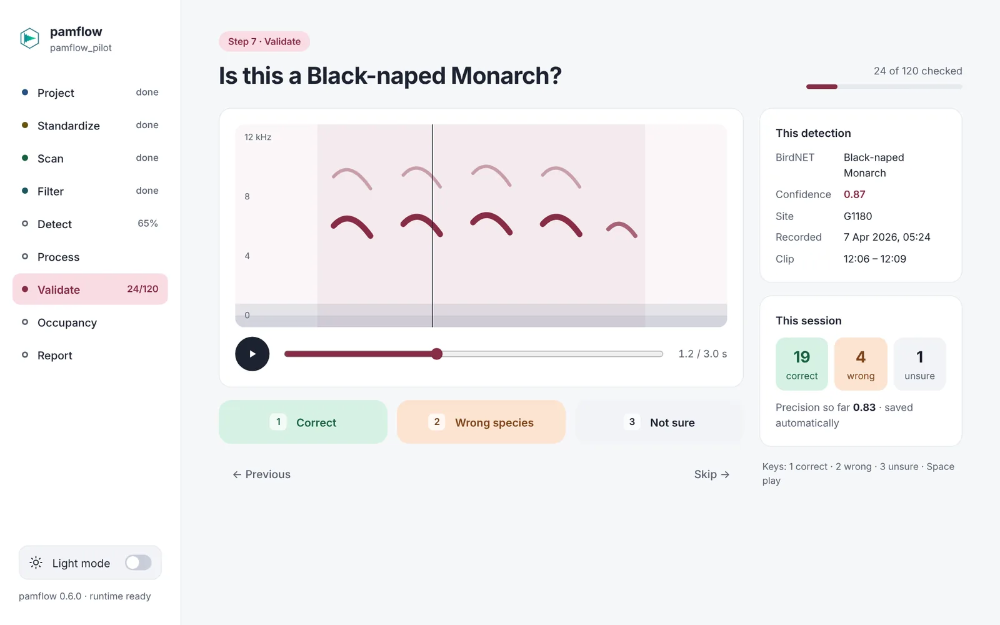
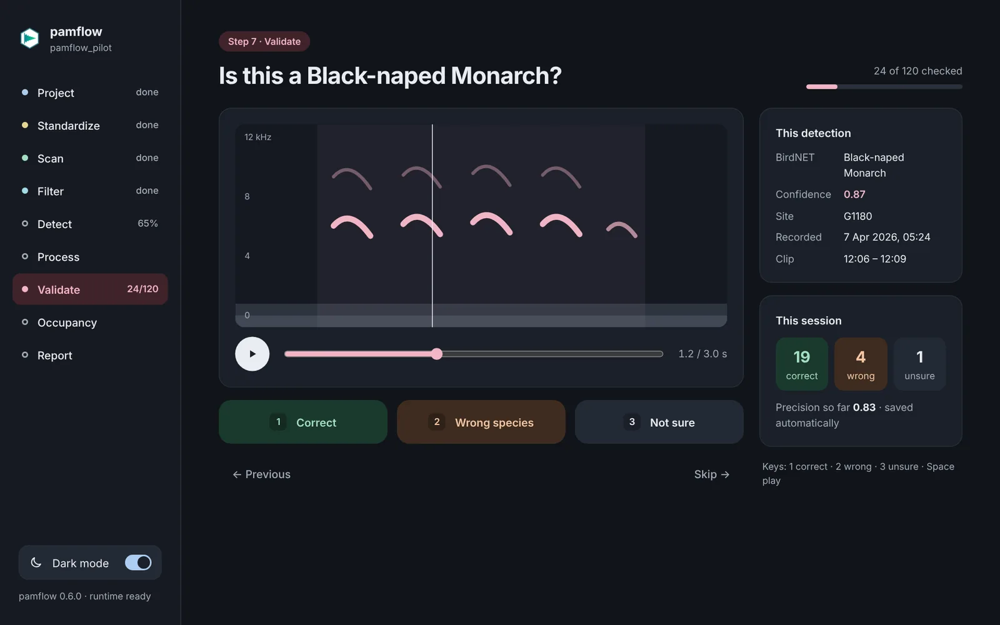
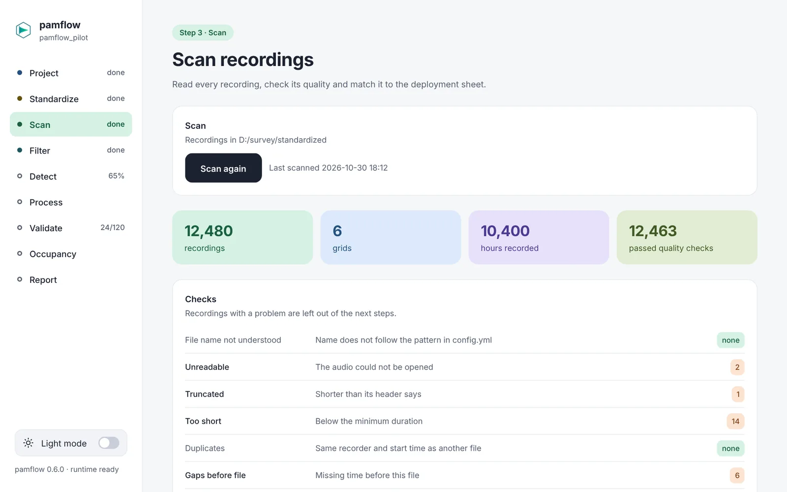
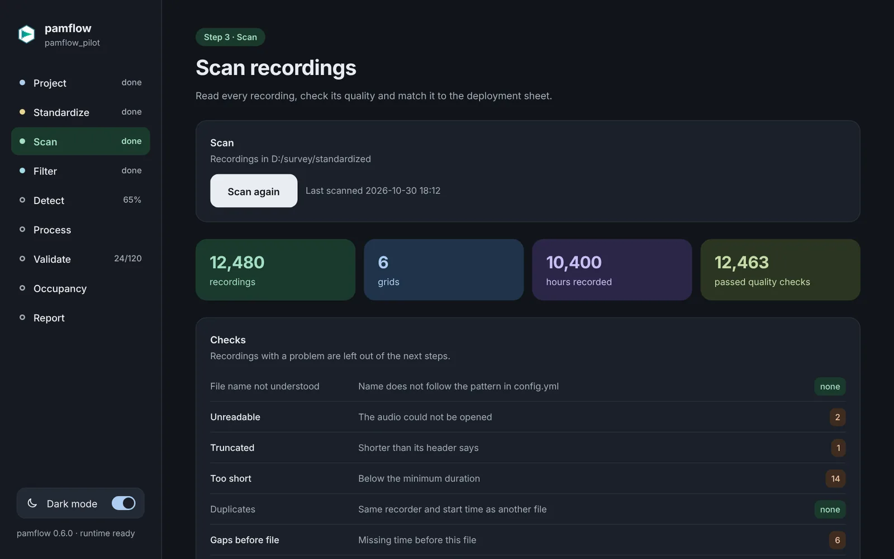
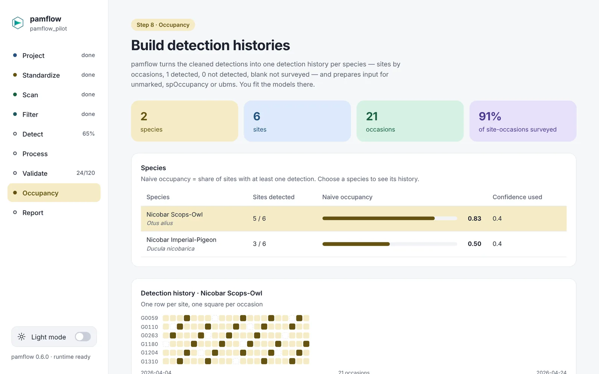
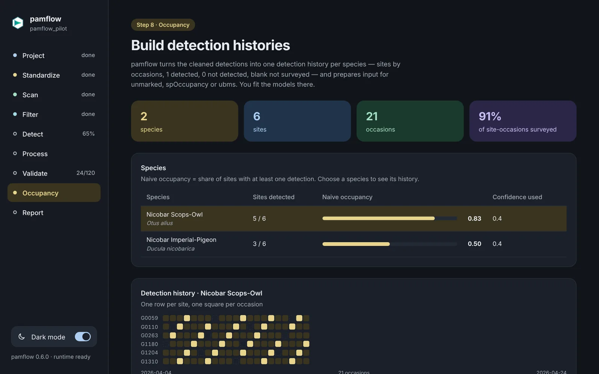
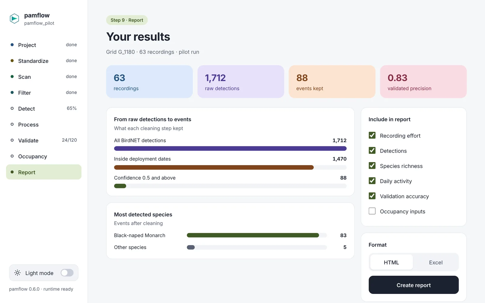
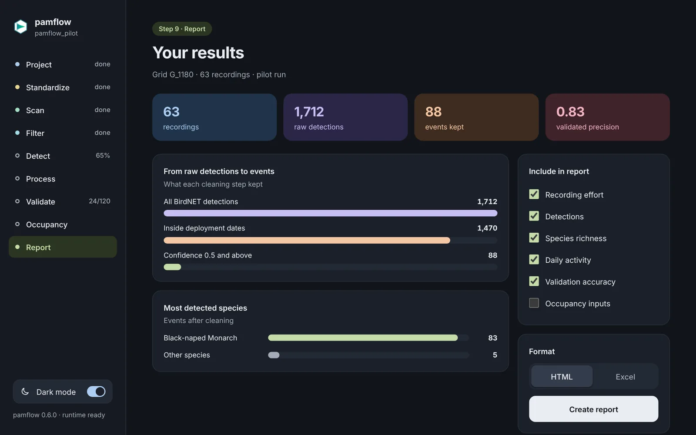

Passive acoustic monitoring, from recordings to occupancy
pamflow Desktop takes your recordings through BirdNET detection, validation, detection histories and reports, with clicks instead of code. One installer for Windows, macOS and Linux; nothing else to install.
Version 0.1.0, in testing · everything stays on your computer


Nine steps, one project folder
Each step reads the results of the one before and saves its own, so you can stop at any point and carry on later. The analysis is done by the pamflow R package, which comes inside the installer.
Project
Open a project folder, start a new one with ready-made settings, or try the example project.
Standardize
Optional. Turn raw recordings into one tidy, consistently named set of files. Your originals are never changed.
Scan
Read every recording, check its quality (unreadable, truncated, duplicates, gaps) and match it to your deployment sheet.
Filter
High-pass filter against wind and traffic noise, with progress, stop and continue.
Detect
Run BirdNET, your own classifier or its global model, on all recordings. A stopped run continues where it stopped.
Process
Clean the detections: merge overlaps and apply confidence, species and date rules.
Validate
Review a sample of detections by ear and eye, then see precision by species and confidence.
Occupancy
Build one detection history per species, ready for unmarked, spOccupancy or ubms.
Report
Write an HTML report and an Excel workbook you can share.
A quick look
Light and dark, with a soft colour for each step. These screens show demo numbers.


Every recording is checked before anything is analysed. Problem files are left out of the next steps and listed for you.
Listen, look at the spectrogram and answer with one key. Precision is worked out as you go and saved automatically.


One detection history per species: sites by occasions, detected, not detected or not surveyed.


An HTML report and an Excel workbook, written into your project folder.
Made to just work
One installer
R, Python, BirdNET, ffmpeg and pandoc are inside. Nothing else to install or configure.
Settings that are ready
A new project starts with default settings. Change them in the app; they are saved to a settings file you can keep anywhere.
Built for long runs
Progress is saved after every batch. The computer stays awake while a long job runs, and closing the window asks first.
Your data stays yours
Nothing is uploaded. The only download is BirdNET's own model, and only if you ask for it.
Your own classifier
Use BirdNET's global model for about 6,500 species, or a classifier you trained yourself.
Open source
The app and the pamflow package are on GitHub. Read the code, report problems, suggest changes.
Download
Latest version · You need about 6 GB of free disk space. The first start unpacks the analysis engine (1 to 5 minutes, once).
macOS
Apple Silicon is any Mac from late 2020 onward; older Macs are Intel.
Linux
An AppImage runs on any distribution; the .deb is for Ubuntu and Debian.
Installing and first start
Windows says "Windows protected your PC"
Choose More info, then Run anyway.
macOS says pamflow "is damaged and can't be opened"
The app is fine; the installer just isn't signed yet. Drag pamflow into Applications, run this once in Terminal, then open it normally:
xattr -cr /Applications/pamflow.app
Linux AppImage does not start
Make it executable and run it:
chmod +x pamflow_*.AppImage ./pamflow_*.AppImage
The first start shows "Setting up pamflow"
The app unpacks R, Python, BirdNET and ffmpeg into your user folder. This takes 1 to 5 minutes, happens once (and again only after an update that changes the engine), and needs no internet.
Something went wrong
Use Save diagnostics at the bottom of the sidebar. It writes one text file with versions, folders and the latest log lines. Attach it to an issue on GitHub.
BirdNET models and licence
On the Project step you can download BirdNET's global model once (about 73 MB, from Zenodo) or point to your own classifier. BirdNET's models are free for research and other non-commercial use (CC BY-NC-SA 4.0). Please cite Kahl et al. (2021), BirdNET: A deep learning solution for avian diversity monitoring, Ecological Informatics 61, 101236.